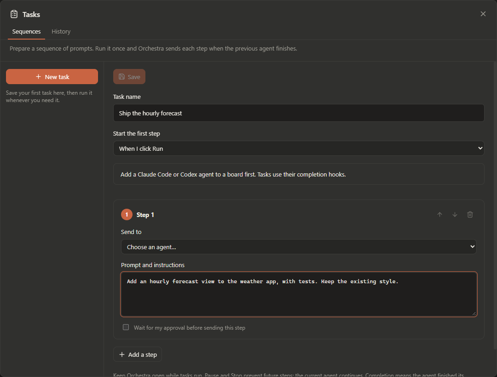
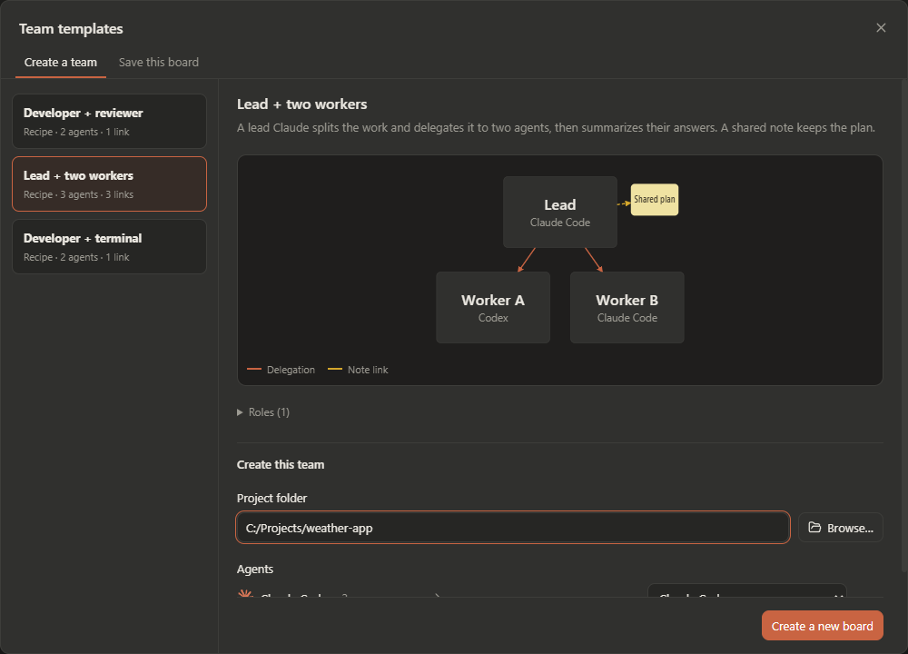

Queue the prompts, go do something else
Save ordered steps for Claude Code and Codex. Orchestra sends the next prompt when the previous agent finishes. A step can attach the previous answer, or wait for your approval.
Orchestra is a desktop app. Drop Claude Code, Codex or any CLI agent on one big map, each in a real terminal, then draw links so they hand work to each other.
Free, MIT license. Windows 10 and 11, macOS. Other downloads
A small copy of the real thing, running in your browser. The terminals here are scripted. In the app they are real.
Pick the Link tool, click one tile, then another. Every Relay and Delegation link has a turn limit, three by default, so two agents can't talk forever.
Review this change and list any bug: {response}
list_agents · send_to_agent · wait_for_replies
run_in_terminal · read_terminal · interrupt_terminal
● write_note("Launch plan")
list_notes · read_note · write_note

Save ordered steps for Claude Code and Codex. Orchestra sends the next prompt when the previous agent finishes. A step can attach the previous answer, or wait for your approval.

Developer + reviewer, Lead + two workers, Developer + terminal. Or save your own board, roles and links included.
A lasting instruction per tile, given again at every session start and after /clear.
Drop the Branch square on a tile. The agent restarts on that branch, in its own git worktree.
The changed files of a tile's worktree with a colored diff. One click opens them in VS Code.
Every message, reply, command and refusal that went through a link. Filter by board, tile or type, follow one task by its ID, export as JSON.
Draw on the map, drop sticky notes and text next to the terminals, group tiles and lay them out as a grid, rows or columns.
And the small things
When an agent needs a permission, a notch slides out of the inbox in the top bar. For a plain yes or no, you answer right there, without hunting for the tile. For a question or a plan, it takes you to the terminal.
Orchestra never approves anything on its own. The notch only passes on your click.
The whole app in under three minutes, recorded on a real board. It was shot on the first release, so a few things have moved since.
It starts the CLIs you already use, with your own accounts. No Orchestra account, no API key, no server of ours in the middle.
~/Library/Application Support/Orchestra. The log and the inbox stay in memory.orchestra.config.toml, a separate profile, and Orchestra's entries in hooks.json. Your config.toml is never changed, and both do nothing outside Orchestra.fetch, worktree add when you pick a branch, and read-only commands. It never commits and never pushes.claude or codex must already run in a normal terminal, logged in with your account. Git too, if you want branches.
Windows: run the installer. macOS: open the .dmg and drag Orchestra to Applications.
Click your project in the file explorer, then drag an agent from the dock. A one-minute tour shows the rest on your own board.
Windows will say “Windows protected your PC”: click More info, then Run anyway. On macOS, right-click Orchestra and choose Open the first time.
No. Orchestra launches the CLIs you already installed and logged into, with your own subscriptions.
Claude Code and Codex can relay, delegate, drive a terminal, use linked notes and run task sequences. Other CLIs (Gemini CLI, Aider, your own…) run in a tile and can receive relayed messages. Their status comes from terminal activity.
Not through Orchestra. Your agents talk to their own providers exactly as they do in a normal terminal.
It can. Every tile uses your own plan, and linked agents that keep handing work to each other add up. Keep turn limits low and switch off the links you don't need. The Usage panel shows where you stand.
The same as in your own terminal: each tile runs the real CLI in the folder you picked, with that CLI's permission settings. Orchestra's own tools are pre-approved, except running a command in a linked terminal, which always asks.
Those are Orchestra's status hooks (working, done). Choose Trust all and continue once and Codex remembers it.
Yes, in Settings › Agents. Pick a known one or add your own command, logo and color. Test checks that the command exists.
Not yet. Orchestra is built and tested on Windows and macOS (Apple Silicon and Intel).